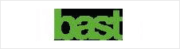

관련사이트
교통사고분석시스템 통합DB시스템과 함께하는 기관 및 기업의 사이트입니다.
유관기관
• 도로교통공단 · 경찰청
• 손해보험사
- 손해보험협회
- 메리츠화재
- 한화손해보험
- 롯데손해보험
- 그린손해보험
- 흥국생명
- AXA다이렉트
- 삼성화재

- 현대해상
- LIG손해보험
- 동부화재
- The.K손해보험

- 현대하이카다이렉트자동차
- ERGO다음다이렉트
- ACE손해보험
- 차티스보험
• 공제조합
• 국내 유관기관
- 대한교통학회
- 한국교통연구원
- 보험개발원
- 한국도로공사
- 삼성교통안전문화연구소
- 경제정의실천시민연합
- 교통문화운동본부
- 녹색교통운동
- 안전생활실천시민연합
- 해피웨이 드라이브
- 어린이안전학교
- 한국생활안전연합

- 키즈오토파크
- 한국교통장애인협회
- 교통신문
• 해외 유관기관
- 국제도로교통사고DB회
- 일본 교통사고총합분석센터원
- 미국 통계분석센터(NCSA)
- 미국교통안전위원회(NTSB)

- 
- 영국 교통연구소(TRL)
- 영국 왕립사고예방협회
- 독일연방도로연구소(BASt)
- 프랑스 국립교통안전연구소동
- 호주오스트로드(Austroads)
- 스웨덴 국립도로교통연구소
주소 : 우)100-789 서울특별시 중구 왕십리로 407(신당5동 171) 도로교통공단 대표전화: 02-2230-6114 팩스 : 02-2230-6113
Copyright © 2015 KoROAD. All rights Reserved.